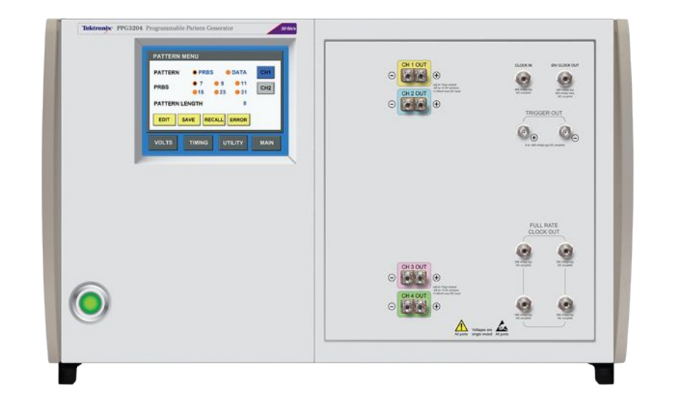

Laboratory
Use this module to control the laboratory equipment.
>>> import opticomlib.lab as lab
>>> lab.search_inst()
('ASRL3::INSTR', 'ASRL4::INSTR', 'USB::0x0699::0x3130::9211219::INSTR')
Functions
Intruments search |
|
|
Signal Synchronizer |
|
Eye diagram parameters v2 |
Classes
|
Tektronix Programmable Pattern Generator PPG3204 |
- opticomlib.lab.search_inst()[source]
Intruments search
Search for the available instruments in the system and print the IDs.
- opticomlib.lab.SYNC(signal_rx: electrical_signal | ndarray, slots_tx: binary_sequence | ndarray, sps: int = None)[source]
Signal Synchronizer
Synchronizes the received signal with the transmitted signal to determine the starting position in the received signal for further processing. This is done by performing a correlation between the received signal and the transmitted signal and finding the maximum correlation position and shifting the received signal to that position (deleting the samples before the maximum correlation position).
- Parameters:
signal_rx (
electrical_signal|np.ndarray) – The received digital signal (from the oscilloscope or an ADC).slots_tx (
binary_sequence|np.ndarray) – The transmitted slots sequence.sps (
int, optional) – Number of samples per slot of the digitalized signalsignal_rx.
- Returns:
A tuple containing the synchronized digital signal and the position in the
signal_rxarray from which synchronization was performed.- Return type:
tuple[electrical_signal,int]- Raises:
TypeError – The
spsmust be an integer to perform synchronization.BufferError – If the number of received slots have to be greater than the transmitted slots.
ValueError – If no correlation maximum is found.
- opticomlib.lab.GET_EYE_v2(sync_signal: electrical_signal | ndarray, slots_tx: binary_sequence | ndarray, nslots: int = 4096)[source]
Eye diagram parameters v2
Estimate the means and standard deviations of levels 0 and 1 in the
sync_signalby knowing the transmitted sequenceslots_tx. It separates the received signal levels corresponding to transmitted level 0 and 1 and estimates the means and standard deviations, different todevices.GET_EYE()that assume transmitted bits are not known.- Parameters:
sync_signal (electrical_signal) – Synchronized digital signal in time with the transmitted signal.
slots_tx (binary_sequence) – Transmitted bit sequence.
nslots (int, default: 8192) – Number of slots to use for estimation.
- Returns:
A dictionary containing the following keys:
sps: Samples per slot of the digital signal.y: Synchronized digital signal.unos: Received signal levels corresponding to transmitted level 1.zeros: Received signal levels corresponding to transmitted level 0.t0: Time instants for level 0.t1: Time instants for level 1.i: Position in the ‘signal’ vector from which synchronization was performed.mu0: Mean of level 0.mu1: Mean of level 1.s0: Standard deviation of level 0.s1: Standard deviation of level 1.
- Return type:
dict
- class opticomlib.lab.PPG3204(addr_ID: str = None)[source]
Tektronix Programmable Pattern Generator PPG3204
The PPG3204 is a Programmable Pattern Generator. It is a 4-channel pattern generator with 32 Gb/s maximum data rate. This class provides a set of methods to control the PPG3204.
The PPG3204 has the following features:
Attributes
A connection (session) to the PPG instrument (if addr_ID is provided).
Number of channels of the PPG3204, 4 channels.
Pattern length minimum value, 2 bit.
Pattern length maximum value, 2^21 = 2097152 (2M) bits.
Minimum amplitude of the output signal, 0.3 V.
Maximum amplitude of the output signal, 2 V.
Minimum offset of the output signal, -2 V.
Maximum offset of the output signal, 3 V.
Minimum frequency, 1.5 GHz.
Maximum frequency, 32 GHz.
Mode of the pattern generator, ['DATA', 'PRBS']
The order of polynomial generator for PRBS mode, [7,9,11,15,23,31]
Maximum length of the memory of the PPG3204, 2^21 = 2097152 (2M) for each channel.
Maximum length of the data to send in a single command, 1024 bits.
Minimum skew, -25 ps
Maximum skew, 25 ps
Methods
__init__([addr_ID])Initialize the PPG3204.
reset()Reset the PPG to its default state.
set_patt_len(patt_len[, CHs])Set the length of the pattern
get_patt_len([CHs])Get the current length of pattern for specified channels
set_mode(mode[, CHs])Set mode of the PPG3204 for each channels specified.
get_mode([CHs])Get mode of the PPG3204 for each channels specified, can be 'DATA' or 'PRBS'
set_prbs_order(order[, CHs])Set the order of polynomial generator for PRBS mode.
get_prbs_order([CHs])Get the prbs polynomial order for each channel specified
set_data(data[, start_addrs, CHs])Set the data of the pattern.
get_data(size[, start_addrs, CHs])Get the data of the pattern for each specified channel
set_bits_shift(bsh[, CHs])Set the bits shift of the pattern
get_bits_shift([CHs])Get the bits shift of the pattern for each specified channel
enable_outputs([CHs])Enable the output of the channels
disable_outputs([CHs])Disable the output of the channels.
set_freq(freq)Set the bit rate of the pattern
get_freq()Get the frequency of the pattern.
set_skew(skew[, CHs])Set the skew of the channels
get_skew([CHs])Get the skew of the channels
set_output_voltage(amplitude[, CHs])Set the peak-to-peak output voltage of each channel, in volts.
get_output_voltage([CHs])Get the peak-to-peak output voltage of each channel, in volts.
set_offset(offset[, CHs])Set the offset of the channels
get_offset([CHs])Get the offset of the channels
__call__([freq, patt_len, Vout, offset, ...])Configure the PPG3204 with the specified parameters for specified channels.
config([freq, patt_len, Vout, offset, bsh, ...])Configure the PPG3204 with the specified parameters for specified channels.
- CHANNELS = 4
Number of channels of the PPG3204, 4 channels.
- PATT_LEN_MIN = 2
Pattern length minimum value, 2 bit.
- PATT_LEN_MAX = 2097152
Pattern length maximum value, 2^21 = 2097152 (2M) bits.
- AMPLITUDE_MIN = 0.3
Minimum amplitude of the output signal, 0.3 V.
- AMPLITUDE_MAX = 2
Maximum amplitude of the output signal, 2 V.
- OFFSET_MIN = -2
Minimum offset of the output signal, -2 V.
- OFFSET_MAX = 3
Maximum offset of the output signal, 3 V.
- FREQ_MIN = 1500000000.0
Minimum frequency, 1.5 GHz.
- FREQ_MAX = 32000000000.0
Maximum frequency, 32 GHz.
- PATT_TYPE = ['DATA', 'PRBS']
Mode of the pattern generator, [‘DATA’, ‘PRBS’]
- PRBS_ORDERS = [7, 9, 11, 15, 23, 31]
The order of polynomial generator for PRBS mode, [7,9,11,15,23,31]
- MAX_MEMORY_LEN = 2097152
Maximum length of the memory of the PPG3204, 2^21 = 2097152 (2M) for each channel.
- MAX_CHUNK_LEN = 1024
Maximum length of the data to send in a single command, 1024 bits.
- MIN_SKEW = -2.5e-11
Minimum skew, -25 ps
- MAX_SKEW = 2.5e-11
Maximum skew, 25 ps
- __init__(addr_ID: str = None)[source]
Initialize the PPG3204.
If
addr_IDis not passed as argument, methods will print the commands instead of sending them to the PPG. This is useful for debugging.- Parameters:
addr_ID (
str, optional) – VISA resource of the PPG (e.g. ‘USB::0x0699::0x3130::9211219::INSTR’). Default is None.
- inst
A connection (session) to the PPG instrument (if addr_ID is provided).
- set_patt_len(patt_len: int | list[int], CHs: int | list[int] = None)[source]
Set the length of the pattern
Fix a pattern length for each channel passed as argument.
Range: 2 to 2097152 bits (2 Mbits/channel).
Resolution: 1 bit.
- Parameters:
patt_len (
intorArray_Like(int)) – Pattern length for every channel specified inCHs.CHs (
intorArray_Like(int), optional) – List of channels to set the pattern length.
- Raises:
ValueError – If
patt_lenis not in the correct format or type.- Warns:
UserWarning – If the pattern length is out of range.
- get_patt_len(CHs: int | list[int] = None)[source]
Get the current length of pattern for specified channels
- Parameters:
CHs (
intorArray_Like(int), optional) – List of channels to get the pattern length.- Returns:
patt_len – Every channel pattern length.
- Return type:
np.ndarray
- set_mode(mode: Literal['data', 'prbs'], CHs: int | list[int] = None)[source]
Set mode of the PPG3204 for each channels specified.
- Parameters:
mode (
str{'DATA','PRBS'}) – Work mode of the PPG.CHs (
intorArray_Like(int), optional) – List of channels to get the mode.
- get_mode(CHs: int | list[int] = None)[source]
Get mode of the PPG3204 for each channels specified, can be ‘DATA’ or ‘PRBS’
- Parameters:
CHs (
intorArray_Like(int), optional) – List of channels to get the mode.- Returns:
mode – Every channel mode.
- Return type:
np.ndarray
- set_prbs_order(order: int | list[int], CHs: int | list[int] = None)[source]
Set the order of polynomial generator for PRBS mode.
- Parameters:
order (
intorArray_Like(int)) – order of the polynomial generator.CHs (
intorArray_Like(int), optional) – List of channels to set the order.
- Raises:
ValueError – If
orderis not in the correct format.
Notes
PRBS pattern lengths Independently selected for each channel.
\(2^7-1\) bits. Polynomial \(= X^7 + X^6 + 1\)
\(2^9-1\) bits. Polynomial \(= X^9 + X^5 + 1\)
\(2^{11}-1\) bits. Polynomial \(= X^{11} + X^9 + 1\)
\(2^{15}-1\) bits. Polynomial \(= X^{15} + X^{14} + 1\)
\(2^{23}-1\) bits. Polynomial \(= X^{23} + X^{18} + 1\)
\(2^{31}-1\) bits. Polynomial \(= X^{31} + X^{28} + 1\)
- get_prbs_order(CHs: int | list[int] = None)[source]
Get the prbs polynomial order for each channel specified
- Parameters:
CHs (
intorArray_Like(int), optional) – List of channels to get the order.- Returns:
order – Every channel order.
- Return type:
np.ndarray
- set_data(data: str | ndarray, start_addrs: int = 1, CHs: int | list[int] = None)[source]
Set the data of the pattern.
Programs the pattern data memory. Each byte of pattern data is a character (0 or 1) representing one bit of pattern data. The start address can be any bit location, MAX_MEMORY_LEN - 1. MAX_MEMORY_LEN is \(2^{21} = 2097152\) (2M) for each channel.
- Parameters:
data (
strorArray_Like(int)) – Data to set to the specified channels (usestrtype only whenCHsisintorNone).start_addrs (
int, optional) – Start address of the data to set in the pattern memory. The range is from 1 to 2^21. Default is 1.CHs (
intorArray_Like, optional) – Channels to set the data. IfCHs=Nonedata will be fixed in all channels.
- Raises:
ValueError – If
datais not in the correct format.- Warns:
UserWarning – If the length of the data is out of the range of the PPG3204.
Examples
In this examples we don’t pass the argument
addr_IDin order to print the commands output. For communication with a device this parameter is requered.>>> from opticomlib.lab import PPG3204 >>> >>> ppg = PPG3204() >>> >>> ppg.set_data('000111000111', CHs=2) :DIG2:PATT:DATA 1,12,#212000111000111 >>> >>> ppg.set_data('000111000111') :DIG1:PATT:DATA 1,12,#212000111000111 :DIG2:PATT:DATA 1,12,#212000111000111 :DIG3:PATT:DATA 1,12,#212000111000111 :DIG4:PATT:DATA 1,12,#212000111000111 >>> >>> ppg.set_data([[1,0,1,0],[0,1,0,1]], CHs=[3,4]) :DIG3:PATT:DATA 1,4,#141010 :DIG4:PATT:DATA 1,4,#140101
- get_data(size: int, start_addrs: int = 1, CHs: int | list[int] = None)[source]
Get the data of the pattern for each specified channel
- Parameters:
size (
int) – Size of the data to get from the pattern memory.start_addrs (
int, optional) – Start address of the data to get from the pattern memory. The range is from 1 to 2^21. Default is 1.CHs (
intorArray_Like(int), optional) – List of channels to get the data.
- Returns:
data – Data of the pattern for each channel.
- Return type:
np.ndarray, shape (n_channels, n_bits)- Warns:
UserWarning – If the start address or the size is out of the range of the PPG3204.
- Raises:
ValueError – If
start_addrsorsizeare not integers.
- set_bits_shift(bsh: int | list[int], CHs: int | list[int] = None)[source]
Set the bits shift of the pattern
- Parameters:
bsh (
intorArray_Like(int)) – Bits shift to set to the specify channelsCHs (
intorArray_Like(int), optional) – Channels to set the bits shift. IfCHs=Nonebits shift will be fixed in all channels.
- Raises:
ValueError – If
bshis not in the correct format.
Notes
- Pattern shift advance or delay. This is equivalent to unlimited shifting since this range allow shifting the longest pattern to any position.
Range: \(\pm(2^{30}-1)\)
Resolution: 1 bit
- get_bits_shift(CHs: int | list[int] = None)[source]
Get the bits shift of the pattern for each specified channel
- Parameters:
CHs (
intorArray_Like(int), optional) – List of channels to get the bits shift.- Returns:
bsh – Every channel bits shift.
- Return type:
np.ndarray
- enable_outputs(CHs: int | list[int] = None)[source]
Enable the output of the channels
- Parameters:
CHs (
intorArray_Like(int), optional) – Channels to enable the output. IfCHs=Noneall channels will be enabled.
- disable_outputs(CHs: str | int | list[str] | list[int] = None)[source]
Disable the output of the channels.
- Parameters:
CHs (
intorArray_Like(int), optional) – Channels to disable the output. IfCHs=Noneall channels will be disabled.
- set_freq(freq: float)[source]
Set the bit rate of the pattern
Range: 1.5 GHz to 32 GHz
Resolution: 10 kb/s
Accuracy: \(\pm 5\) ppm
- Parameters:
freq (
float) – Frequency of the pattern in Hz. The range is from 1.5 GHz to 32 GHz.- Warns:
UserWarning – If the frequency is out of the range of the PPG3204.
- get_freq()[source]
Get the frequency of the pattern.
- Returns:
freq – Bit Rate of the pattern in bits/s.
- Return type:
float
- set_skew(skew: float | list[float], CHs: int | list[int] = None)[source]
Set the skew of the channels
The channel skew is the timing of the data output.
Range: -25 to 25 ps
Resolution: 0.1 ps
- Parameters:
skew (
floatorArray_Like(float)) – Skew to set to the specify channelsCHs (
intorArray_Like(int), optional) – Channels to set the skew. IfCHs=Noneskew will be fixed in all channels.
- Raises:
ValueError – If
skewis not in the correct format.
- get_skew(CHs: int | list[int] = None)[source]
Get the skew of the channels
- Parameters:
CHs (
intorArray_Like(int), optional) – List of channels to get the skew.- Returns:
skew – Every channel skew.
- Return type:
np.ndarray
- set_output_voltage(amplitude: float | list[float], CHs: int | list[int] = None)[source]
Set the peak-to-peak output voltage of each channel, in volts.
- Parameters:
amplitude (
floatorArray_Like) – Amplitude to set to the specify channelsCHs (
intorArray_Like, optional) – Channels to set the amplitude. IfCHs=Noneamplitude will be fixed in all channels.
- get_output_voltage(CHs: int | list[int] = None)[source]
Get the peak-to-peak output voltage of each channel, in volts.
- Parameters:
CHs (
intorArray_Like(int), optional) – List of channels to get the amplitude.- Returns:
Vout – Every channel output voltage.
- Return type:
np.ndarray
- set_offset(offset: float | list[float], CHs: int | list[int] = None)[source]
Set the offset of the channels
- Parameters:
offset (
floatorArray_Like(float)) – Offset to set to the specify channelsCHs (
intorArray_Like(int), optional) – Channels to set the offset. IfCHs=Noneoffset will be fixed in all channels.
- Raises:
ValueError – If
offsetis not in the correct format.- Warns:
UserWarning – If the offset is out of the range of the PPG3204.
Notes
- Offset adjust relative to nominal position.
Range: -2 to 3 V
- get_offset(CHs: int | list[int] = None)[source]
Get the offset of the channels
- Parameters:
CHs (
intorArray_Like(int), optional) – List of channels to get the offset.- Returns:
offset – Every channel offset.
- Return type:
np.ndarray
- __call__(freq: float = None, patt_len: int | list[int] = None, Vout: float | list[float] = None, offset: float | list[float] = None, bsh: int | list[int] = None, skew: float | list[float] = None, mode: Literal['DATA', 'PRBS'] = None, order: int | list[int] = None, data: ndarray | list[numpy.ndarray] = None, CHs: int | list[int] = None)[source]
Configure the PPG3204 with the specified parameters for specified channels.
- Parameters:
freq (
float, optional) – Frequency of the pattern in Hz. The range is from 1.5 GHz to 32 GHz.patt_len (
intorArray_Like(int), optional) – Pattern length for every channel specified inCHs.Vout (
floatorArray_Like(float), optional) – Amplitude to set to the specify channelsoffset (
floatorArray_Like(float), optional) – Offset to set to the specify channelsbsh (
intorArray_Like(int), optional) – Bits shift to set to the specify channelsskew (
floatorArray_Like(float), optional) – Skew to set to the specify channelsmode (
str, optional) – Work mode of the PPG.order (
intorArray_Like(int), optional) – order of the polynomial generator. Ifmode='PRBS'.data (
np.ndarrayorArray_Like(np.ndarray), optional) – Data to set to the specify channels. Ifmode='DATA'.CHs (
intorArray_Like(int), optional) – Channels to set the configuration.
Examples
In this examples we don’t pass the argument
addr_IDin order to print the commands output. For communication with a device this parameter is required.>>> from opticomlib.lab import PPG3204 >>> >>> ppg = PPG3204() >>> ppg(freq=10e9, patt_len=1000, Vout=1.5, offset=0.5, bsh=10, skew=0.5e-12, mode='PRBS', order=7, CHs=2) :FREQ 1.0e+10 :DIG2:PATT:LENG 1000 :VOLT2:POS 1.5v :VOLT2:POS:OFFS 0.5v :DIG2:PATT:BSH 10 :SKEW2 5e-13 :DIG2:PATT:TYPE PRBS :DIG2:PATT:PLEN 7
- config(freq: float = None, patt_len: int | list[int] = None, Vout: float | list[float] = None, offset: float | list[float] = None, bsh: int | list[int] = None, skew: float | list[float] = None, mode: Literal['DATA', 'PRBS'] = None, order: int | list[int] = None, data: ndarray | list[numpy.ndarray] = None, CHs: int | list[int] = None)[source]
Configure the PPG3204 with the specified parameters for specified channels.
- Parameters:
freq (
float, optional) – Frequency of the pattern in Hz. The range is from 1.5 GHz to 32 GHz.patt_len (
intorArray_Like(int), optional) – Pattern length for every channel specified inCHs.Vout (
floatorArray_Like(float), optional) – Amplitude to set to the specify channelsoffset (
floatorArray_Like(float), optional) – Offset to set to the specify channelsbsh (
intorArray_Like(int), optional) – Bits shift to set to the specify channelsskew (
floatorArray_Like(float), optional) – Skew to set to the specify channelsmode (
str, optional) – Work mode of the PPG.order (
intorArray_Like(int), optional) – order of the polynomial generator. Ifmode='PRBS'.data (
np.ndarrayorArray_Like(np.ndarray), optional) – Data to set to the specify channels. Ifmode='DATA'.CHs (
intorArray_Like(int), optional) – Channels to set the configuration.
Examples
In this examples we don’t pass the argument
addr_IDin order to print the commands output. For communication with a device this parameter is required.>>> from opticomlib.lab import PPG3204 >>> >>> ppg = PPG3204() >>> ppg(freq=10e9, patt_len=1000, Vout=1.5, offset=0.5, bsh=10, skew=0.5e-12, mode='PRBS', order=7, CHs=2) :FREQ 1.0e+10 :DIG2:PATT:LENG 1000 :VOLT2:POS 1.5v :VOLT2:POS:OFFS 0.5v :DIG2:PATT:BSH 10 :SKEW2 5e-13 :DIG2:PATT:TYPE PRBS :DIG2:PATT:PLEN 7
{kind=link}